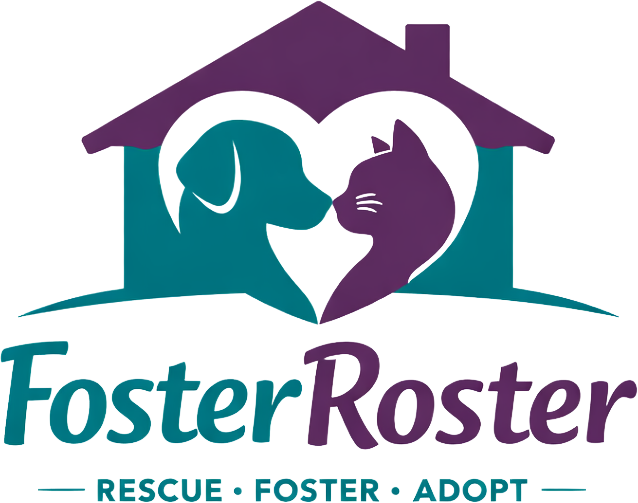
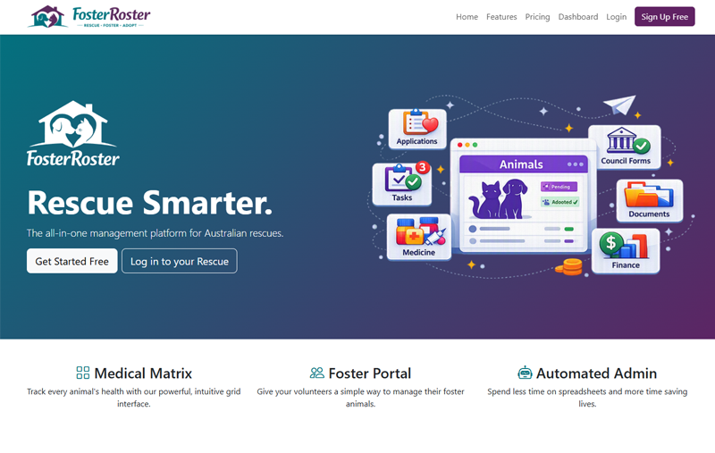

FosterRoster
Manual Rescue Ops → Unified Platform
Independent animal rescues run intake, fostering, medical care, litters, contracts and finances across scattered spreadsheets, paper forms and group chats — nothing talks to each other, and none of it scales past a handful of volunteers.
A configurable multi-tenant SaaS platform generalising the workflows built for individual rescues into one product — animal roster, litter tracking, medical records, adoption pipeline, financials and operations, deployable white-labelled to any Australian rescue.
One login for everything — from a newborn litter's daily weigh-ins to a signed, invoiced adoption contract — with self-serve foster access and reporting that used to require a bespoke build per organisation.

